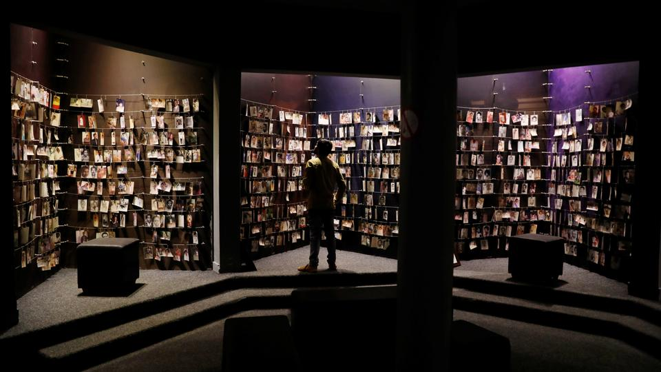
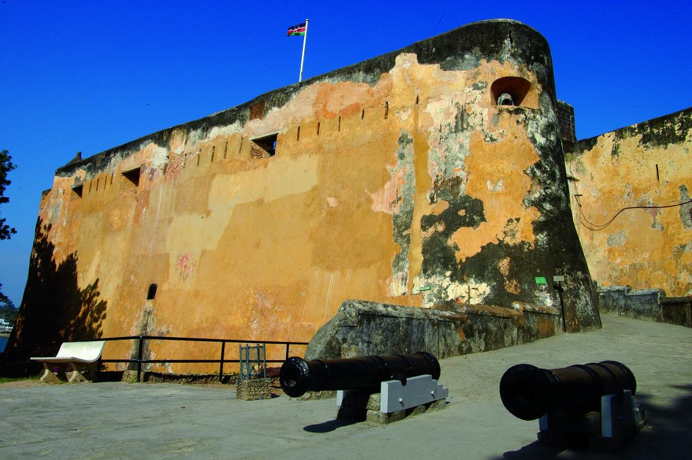
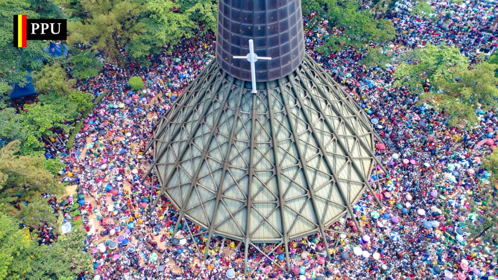
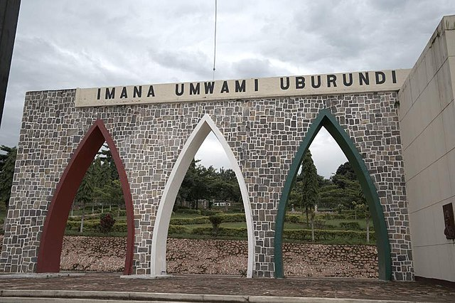
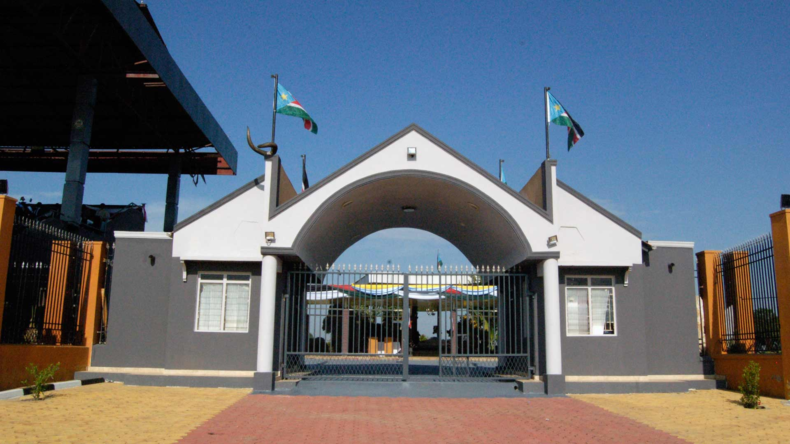

What are Historic Built Environments?
Historic built environments are special places made by people a long time ago. These places are important because they tell us about our history and culture. They can be:
- Museums
- Monuments
- Historical buildings
- Cultural centers
Important Historic Sites in Eastern Africa
Eastern Africa has many amazing historic built environments. Let's learn about some of them:
| Name | Country | Type | Image |
|---|---|---|---|
| Kigali Genocide Memorial | Rwanda | Museum |  |
| Fort Jesus | Kenya | Monument |  |
| Namugongo Shrine | Uganda | Monument |  |
| Independence Monument | Burundi | Monument |  |
| John Garang Mausoleum | South Sudan | Monument |  |
| Black Hawk Down Crash Site | Somalia | Monument |  |
| The Peoples Palace | Djibouti | Monument |  |
| Askari Monument | Tanzania | Monument |  |
| Victory Monument | Ethiopia | Monument |  |
| Bomas of Kenya | Kenya | Cultural Centre |  |
| Hyrax Museum | Kenya | Museum |  |
Why are Historic Sites Important?
Historic built environments are important for many reasons:
- They help us understand our past: By visiting these places, we can learn about the people who lived before us and the events that shaped our world.
- They bring people together: Historic sites can be places where people from different backgrounds come together to learn and celebrate their shared heritage.
- They boost tourism: People from all over the world visit historic sites, which helps local economies.
- They create jobs: People are needed to take care of these special places, like tour guides, museum curators, and archaeologists.
By learning about and protecting historic built environments, we can ensure that future generations can enjoy and learn from them too!